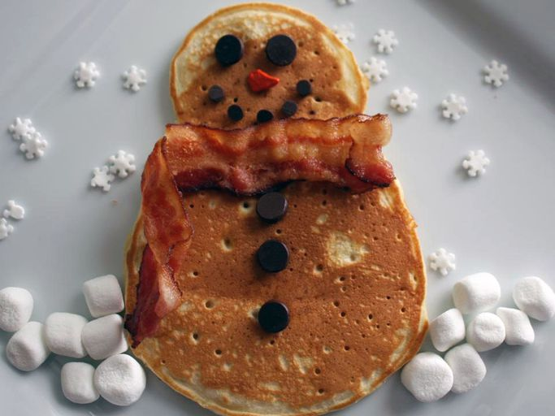

Fluffy Pancakes

Description :
Need a fluffy pancake recipe? This one is just right, especially when there's plenty of butter and syrup. Make it extra special with berries and cream!
This fluffy pancake recipe will quickly become a go-to in your breakfast playbook.
Ingrediants :
- Make the homemade buttermilk (a.k.a. sour milk).
- Mix the dry ingredients in one bowl and the wet ingredients in another.
- Whisk the dry mixture into the wet mixture until smooth.
- Scoop the batter onto the skillet.
- Cook until the top is bubbly, flip, and continue cooking until both sides are brown.